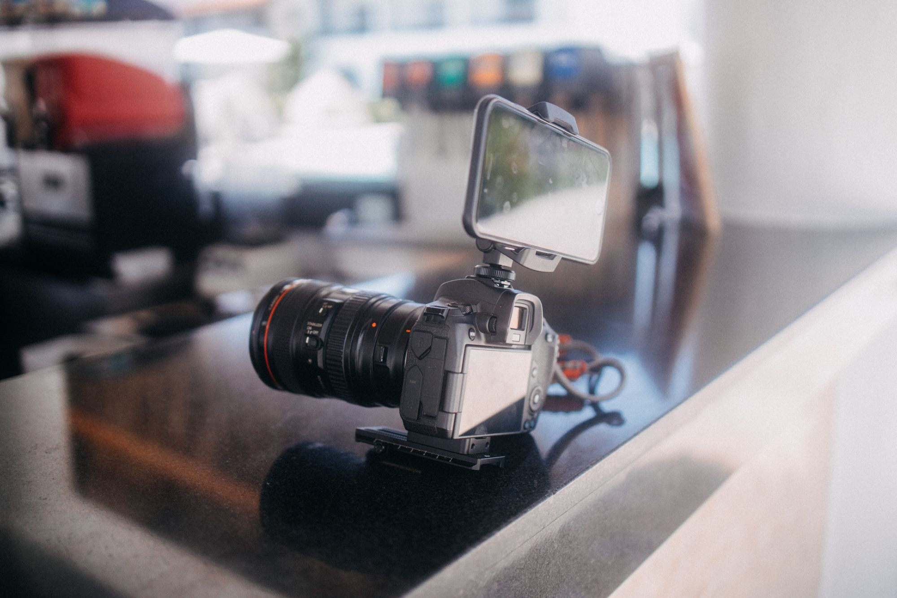

Learn camera basics.
LIVE PREVIEW0.0 EV

source: Matheus Bertelli on Pexelsf 2.8 1 250 iso 400 50 mmbalanced
Camera controls
Try a preset or change the settings yourself.
quick presets
current resultbalanced
Move a slider or choose a preset.
small changes are easier to understand.
watch camera video